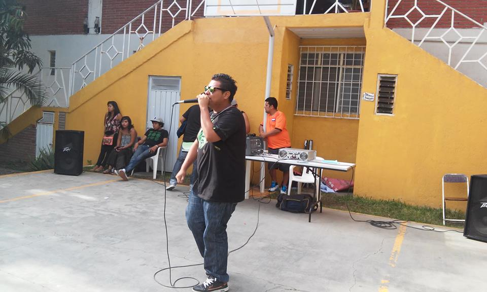

INICIO
¿Que es?
¿1.1.1 Para que Sirve?
1.1.2 Desarrollador BackEnd
1.1.3Diferencias del FrontEnd
AUTOR
REDES SOCIALES
HECHO POR:

DE JESUS ENRIQUEZ JOSE IVAN
ESTUDIANTE DEL 5"J" DE LA LICENCIATURA
EN SISTEMAS COMPUTACIONALES EN LA
UNIVERSIDAD AUTONOMA DE CHIAPAS
ORIGINARIO DE CIUDAD IXTEPEC OAXACA